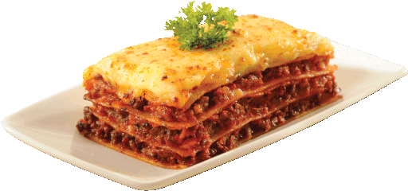

World's Best Lasagna

Description
¡Oh, la lasagna! Un verdadero manjar digno de los paladares más exigentes en todos los mares. Permíteme describirlo con el entusiasmo que se merece.
Imagina una obra maestra culinaria, construida capa por capa con una precisión casi artística. Empezamos con las hojas de pasta, perfectamente al dente, que aportan una textura suave pero firme al plato. Cada capa es una revelación de sabores.
Primero, la rica salsa boloñesa, hecha con la carne más jugosa y sazonada a la perfección con hierbas frescas como el orégano y el tomillo, cocida lentamente para que todos los sabores se fundan y se mezclen en una sinfonía de delicias. A esta maravilla le añadimos una capa de cremosa salsa bechamel, tan ligera y aterciopelada que se deshace en la boca.
Ingredientes
- Care molida
- Pasta para lasagna
- Salsa de tomate
- Cebolla
- Ajo
- Queso Mozzarela
- aceite de oliva
- sal
- Pimienta
- Oregano
- tomillo
- Albahaca
- Leche
- Mantequilla
- Harina
- Nuez moscada
Steps
- Preparar la Salsa Boloñesa:
- Calentar aceite de oliva en una sartén grande.
- Añadir cebolla picada y ajo picado, y cocinar hasta que estén dorados.
- Agregar la carne molida y cocinar hasta que esté dorada.
- Incorporar la salsa de tomate y las hierbas (orégano, tomillo, albahaca). Cocinar a fuego lento durante unos 30 minutos. Salpimentar al gusto.
- Preparar la Salsa Bechamel:
- Derretir mantequilla en una sartén.
- AAñadir harina y cocinar removiendo constantemente hasta obtener una mezcla dorada.
- AGradualmente añadir la leche, batiendo constantemente para evitar grumos.
- Cocinar hasta que la salsa espese. Añadir una pizca de nuez moscada, sal y pimienta al gusto.
- Cocer la Pasta para la lasagna
- Cocinar las hojas de pasta para lasagna según las instrucciones del paquete. Escurrir y reservar.
- Montar la Lasagna:
-
Precalentar el horno a 180°C (350°F).
-
En una bandeja para hornear, colocar una capa de salsa boloñesa en el fondo.
-
Añadir una capa de pasta para lasagna.
-
Extender una capa de salsa bechamel sobre la pasta.
-
Espolvorear queso mozzarella y parmesano rallado.
-
Repetir las capas (boloñesa, pasta, bechamel, quesos) hasta terminar con una capa de quesos.
- Hornear la Lasagna:
-
Hornear la lasagna en el horno precalentado durante unos 25-30 minutos, o hasta que la parte superior esté dorada y burbujeante.
-
Dejar reposar unos minutos antes de servir.